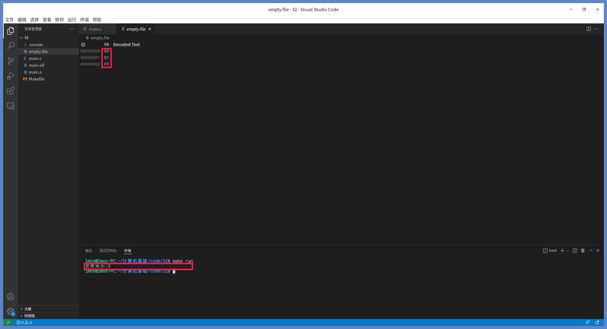
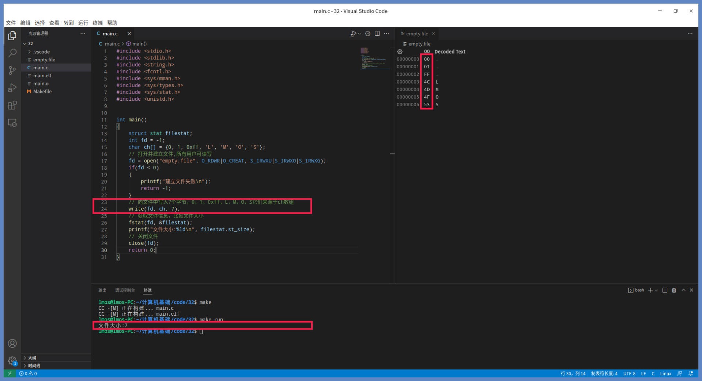
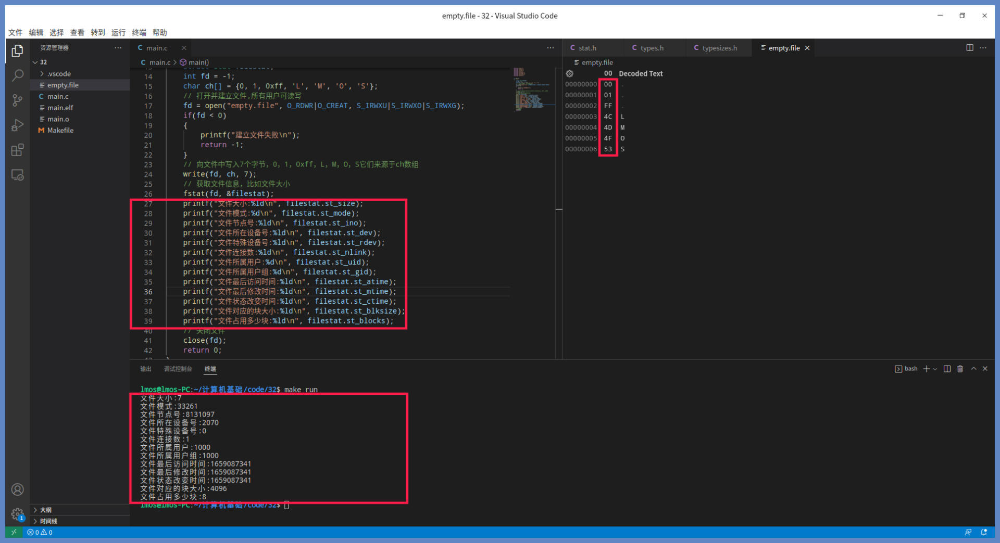
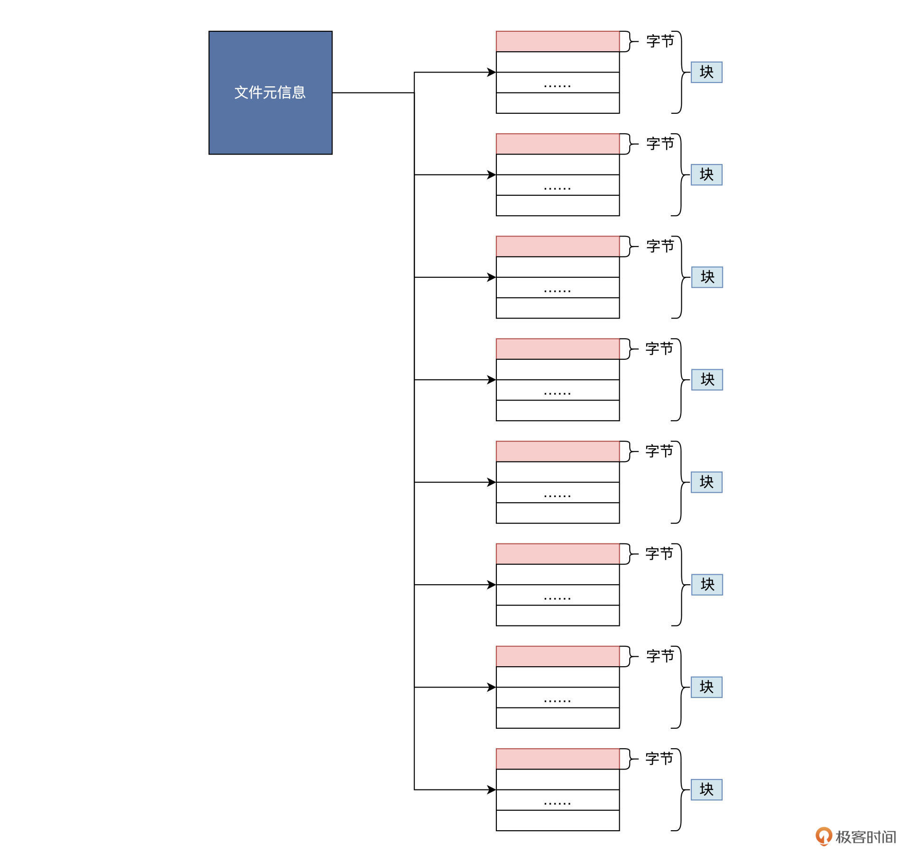
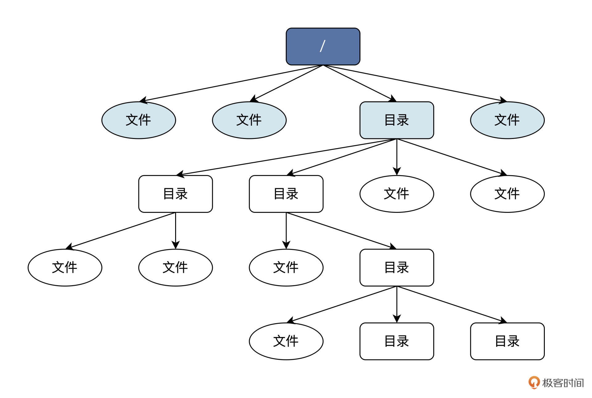
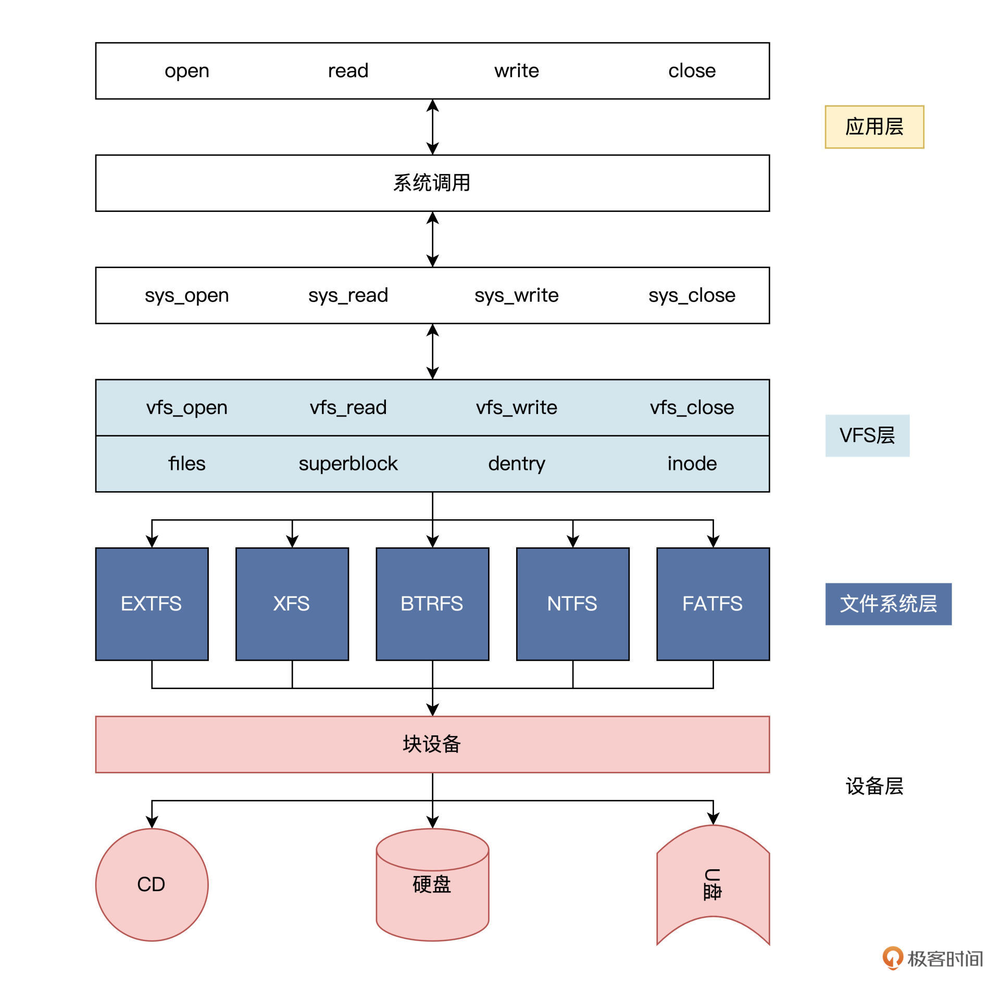
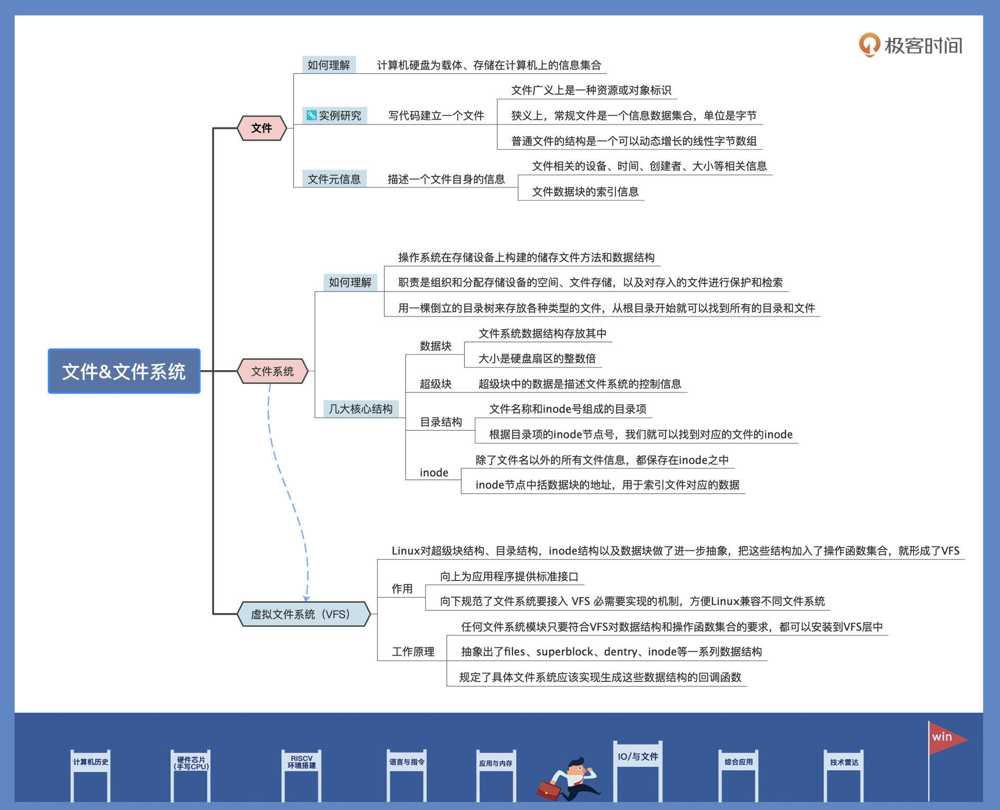

- 00 开篇词 练好基本功，优秀工程师成长第一步.md.html
- 01 CISC & RISC：从何而来，何至于此.md.html
- 02 RISC特性与发展：RISC-V凭什么成为“半导体行业的Linux”？.md.html
- 03 硬件语言筑基（一）：从硬件语言开启手写CPU之旅.md.html
- 04 硬件语言筑基（二）_ 代码是怎么生成具体电路的？.md.html
- 05 指令架构：RISC-V在CPU设计上到底有哪些优势？.md.html
- 06 手写CPU（一）：迷你CPU架构设计与取指令实现.md.html
- 07 手写CPU（二）：如何实现指令译码模块？.md.html
- 08 手写CPU（三）：如何实现指令执行模块？.md.html
- 09 手写CPU（四）：如何实现CPU流水线的访存阶段？.md.html
- 10 手写CPU（五）：CPU流水线的写回模块如何实现？.md.html
- 11 手写CPU（六）：如何让我们的CPU跑起来？.md.html
- 12 QEMU：支持RISC-V的QEMU如何构建？.md.html
- 13 小试牛刀：跑通RISC-V平台的Hello World程序.md.html
- 14 走进C语言：高级语言怎样抽象执行逻辑？.md.html
- 15 C与汇编：揭秘C语言编译器的“搬砖”日常.md.html
- 16 RISC-V指令精讲（一）：算术指令实现与调试.md.html
- 17 RISC-V指令精讲（二）：算术指令实现与调试.md.html
- 18 RISC-V指令精讲（三）：跳转指令实现与调试.md.html
- 19 RISC-V指令精讲（四）：跳转指令实现与调试.md.html
- 20 RISC-V指令精讲（五）：原子指令实现与调试.md.html
- 21 RISC-V指令精讲（六）：加载指令实现与调试.md.html
- 22 RISC-V指令精讲（七）：访存指令实现与调试.md.html
- 23 内存地址空间：程序中地址的三种产生方式.md.html
- 24 虚实结合：虚拟内存和物理内存.md.html
- 25 堆&栈：堆与栈的区别和应用.md.html
- 26 延迟分配：提高内存利用率的三种机制.md.html
- 27 应用内存管理：Linux的应用与内存管理.md.html
- 28 进程调度：应用为什么能并行执行？.md.html
- 29 应用间通信（一）：详解Linux进程IPC.md.html
- 30 应用间通信（二）：详解Linux进程IPC.md.html
- 31 外设通信：IO Cache与IO调度.md.html
- 32 IO管理：Linux如何管理多个外设？.md.html
- 33 lotop与lostat命令：聊聊命令背后的故事与工作原理.md.html
- 34 文件仓库：初识文件与文件系统.md.html
- 35 Linux文件系统（一）：Linux如何存放文件？.md.html
- 36 Linux文件系统（二）：Linux如何存放文件？.md.html
- 37 浏览器原理（一）：浏览器为什么要用多进程模型？.md.html
- 38 浏览器原理（二）：浏览器进程通信与网络渲染详解.md.html
- 39 源码解读：V8 执行 JS 代码的全过程.md.html
- 40 内功心法（一）：内核和后端通用的设计思想有哪些？.md.html
- 41 内功心法（二）：内核和后端通用的设计思想有哪些？.md.html
- 42 性能调优：性能调优工具eBPF和调优方法.md.html
- 先睹为快：迷你CPU项目效果演示.md.html
- 加餐01 云计算基础：自己动手搭建一款IAAS虚拟化平台.md.html
- 加餐02 学习攻略（一）：大数据&云计算，究竟怎么学？.md.html
- 加餐03 学习攻略（二）：大数据&云计算，究竟怎么学？.md.html
- 加餐04 谈谈容器云与和CaaS平台.md.html
- 加餐05 分布式微服务与智能SaaS.md.html
- 国庆策划01 知识挑战赛：检验一下学习成果吧！.md.html
- 国庆策划02 来自课代表的学习锦囊.md.html
- 国庆策划03 揭秘代码优化操作和栈保护机制.md.html
- 温故知新 思考题参考答案（一）.md.html
- 用户故事 我是怎样学习Verilog的？.md.html
- 结束语 心若有所向往，何惧道阻且长.md.html
- 捐赠
34 文件仓库：初识文件与文件系统
你好，我是LMOS。
通过之前的学习，相信你或多或少都体会到“Linux之下一切皆文件”的思想了。
数据是以文件的形式储存下来的，而文件数量一多，就需要文件系统来管理文件，而文件系统正是建立在之前我们学过的IO块设备之上，今天我就带你了解一下什么是文件，什么是文件系统。
还是延续之前的风格，学习过程中有动手实践的部分。这节课的配套代码，你可以从这里下载。让我们正式开始今天的探索之旅吧！
什么是文件
在日常生活中，我们提到的文件通常是指公文、信件，而计算机中的文件与日常见到的文件载体不同，是以计算机硬盘为载体、存储在计算机上的信息集合。
这些信息集合的呈现形式非常多样，可以是文本文档、图片、音乐、视频、应用程序等。文件通常由文件名进行标识和索引。
只说个概念的话，你很难对文件是什么有更深的理解，所以下面我们写代码建立一个文件感受一下。Linux把建立文件的操作包含在了open调用中，open调用既可以打开一个已经存在的文件，又可以建立一个新文件，代码如下所示：
int main()
{
int fd = -1;
// 打开并建立文件,所有用户可读写
fd = open("empty.file", O_RDWR|O_CREAT, S_IRWXU|S_IRWXO|S_IRWXG);
if(fd < 0)
{
printf("建立文件失败\n");
return -1;
}
// 关闭文件
close(fd);
return 0;
}
上面的代码很简单，我们建立一个名为empty.file的文件。但是你需要注意的是，我们并没向该文件中写入任何数据，并且你可以在当前目录下看到，该文件的大小为0。
这说明了文件不一定要有数据，它只是一个标识，这个标识可以既标识数据、设备，还可以标识接口（如/proc目录下的那些文件，其实内核提供给进程的、用来访问特殊数据的接口）。
现在我们再给文件下个定义，就可以说文件从广义上就是一种资源标识或者对象标识。
我们继续基于前面的代码，完善一下，给向程序里写三个字节的数据，并且获取一下文件大小，代码如下：
int main()
{
struct stat filestat;
int fd = -1;
char ch[] = {0, 1, 0xff, 'L', 'M', 'O', 'S'};
// 打开并建立文件,所有用户可读写
fd = open("empty.file", O_RDWR|O_CREAT, S_IRWXU|S_IRWXO|S_IRWXG);
if(fd < 0)
{
printf("建立文件失败\n");
return -1;
}
// 向文件中写入3个字节，0，1，0xff，它们来源于ch数组
write(fd, ch, 3);
// 获取文件信息，比如文件大小
fstat(fd, &filestat);
printf("文件大小:%ld\n", filestat.st_size);
// 关闭文件
close(fd);
return 0;
}
接下来，我们运行代码看看运行结果，如下图所示：

从截图里我们看到了文件大小为3，同时我们打开empty.file文件，观察里面的内容，也会发现是三个字节，与我们在代码中定义的一样。看到这个现象我们应该明白了：从狭义说，常规文件是一个信息数据集合，单位是字节。
我们继续修改代码，写入7个字节，看看是什么情况。这里我们只需要修改write调用里的第三个参数，把它改为7就行了。代码我已经为你改写好了，我们直接看运行结果，如下所示：

同样地，我们看到了文件大小为7，再次打开empty.file文件，同样也是七个字节，与代码中定义完全一样，对字符数据是存储它对应的ASCII码。
看到这里，你有没有对文件产生什么新的思考呢？有没有发现，所谓普通文件的结构，本质上是一个可以动态增长的线性字节数组。无论文件是什么类型或者多大的数据，都会映射到对应的字节，占用一个或者多个字节空间。
我们现在理解了文件是一种标识，也推理解出了文件储存数据的结构是什么样子，但是我不知道你有没有想过，描述一个文件自身也需要很多信息，我们可以把这些信息称为文件元信息。
比如上面用来表示文件大小的信息，就是文件的元信息。不过，文件不光有大小的信息，还有其它别的元信息。
我们继续来修改代码，试着获取文件的部分元信息。为什么是“部分“元信息呢？因为在应用层有些元信息我们是获取不到的，操作系统也不会提供相应接口。修改后的代码运行情况如下所示：

上图中，dev表示文件所在的设备号，而rdev则是当文件是设备类型时的设备号。文件模式能表示文件或者目录，文件节点则表示该文件在文件系统中对应的inode号码。
inode是文件系统中标识一个文件的元信息，上面这些信息大多都来自inode结构，这些信息访问、修改、状态改变的时间是以秒为单位的。上面的数据相同，是因为我们在一瞬间完成了文件的创建和修改。用户id和用户组id则表示该文件是哪个用户建立的，属于哪个用户组。
文件除了本身大小，在文件系统中还分成了块来存储，所以文件有块大小和文件占用了多少块这些信息。下面我们通过一幅逻辑结构图总结一下什么是文件：

由上图可知普通文件的元信息中，不仅仅保存了文件相关的设备、时间、创建者、大小等相关信息，还保存了文件数据块的索引信息，这样才能找到这些数据块。这也从侧面证明了，一个普通文件必须有两个部分组成：一个部分为文件元数据，一部分为文件储存的数据。
文件在硬盘上以块为单位储存，这些块的块号在元信息中按照顺序索引起来，就是整个文件的数据，这就是一个普通的数据文件。普通数据文件的信息都存在储存设备上，这个设备通常是硬盘或硬盘分区（硬盘的一部分）。
如果只有一个软件，我们只要确定元数据和文件数据分别放在哪些扇区就可以，无论是查找、读写、删除，怎么处理都很容易。不幸的是，文件不可能只有一个，而是有成千上万甚至更多，所以这就必须要设计出一套系统方案，来解决多个文件的操作管理。
接下来，我们就聊聊文件管理系统，它是操作系统中一个巨大的功能模块。
文件系统
我们先来搞清楚文件系统概念，文件系统是操作系统在存储设备（常见的是硬盘、U盘、CD，或者其分区）上构建的储存文件方法和数据结构，也就是在存储设备上组织文件的方法。由于这个功能模块规模很大，操作系统专门起了一个名称，把负责管理和存储文件的功能模块称为文件管理系统，简称文件系统。
文件系统由三部分组成，分别是文件系统的接口、对文件操作和管理的功能集、文件及其属性。
从操作系统角度来看，文件系统的职责是组织和分配存储设备的空间、文件存储，以及对存入的文件进行保护和检索。具体点来说，文件系统给用户提供了文件相关操作的一条龙服务，包括为用户建立、存入、读出、修改、转储文件，控制文件的存取读取文件，当用户不再使用时还会删除文件。
一个硬盘中的各个分区上可以使用不同的文件系统，但是在使用之前，我们要对该分区进行格式化。所谓格式化，就是向该分区写入文件系统相关的信息，以及分配分区中相关扇区的数据结构。有了这些数据结构和信息，用户应用才能在文件系统里存放文件。
虽然文件系统的核心数据结构，现在我们还没法直观地感受到，但是它在上层为用户或者进程提供了一个逻辑视图，也就是目录结构，这是一个倒置的树形结构。
树的分支结构上是目录或者文件。从最上层的 /（根）目录开始，就能找到每个文件、每个目录和每个目录下的所有文件。目录对文件进行分层分类，目的是方便用户对众多文件做管理。我为你画了一幅图来展示这个结构，如下图所示：

如上图所示，这是一棵倒树，根据上图中的各种路径，就可以找到其中的任意文件或者目录。例如我们在系统中输入:/home/user1/file1，这就表示其根“/”目录下“home”目录里的“file1”文件。
了解了文件系统的逻辑结构之后，我们不妨进一步思考一下，假如让你来设计实现一个文件系统，你会怎样梳理它的结构呢？
我们先得设计描述整个文件系统信息的结构，其次要有描述目录的信息结构，然后是描述文件元信息结构，最后别忘了文件数据块结构。其实，Linux上众多文件系统都是这么实现的，即使各文件系统在细节上有些变化，但是都具有类似的通用结构，其中心概念离不开超级块、目录结构、inode节点以及数据块。下面我们分别进行讨论。
让我们从数据块说起，由于文件系统数据结构也是存放在数据块中的，所以第一个就要把它搞清楚。
对于这么多文件系统设计，文件系统首先会把硬盘或者硬盘分区划分为一个个数据块，每个数据块大小是硬盘扇区的整数倍，典型的数据块大小是1024字节或者4096字节。
这个大小，既可以在格式化硬盘或者硬盘分区创建文件系统的时候决定，也可以由管理员手动指定，还可以在文件系统的创建时根据硬盘分区的大小，动态选择一个较合理的值。
我们再来看看超级块。超级块一般会放在硬盘分区的第一个或者第二个数据块中。超级块中的数据是描述文件系统的控制信息。
有关该文件系统的大部分信息都保存在超级块中，比如硬盘分区中有多少个数据块，每个数据块的大小、有多少个空闲数据块、文件系统状态、有多少目录或者文件、文件系统名称、UUID、位图信息等。这些信息可以用来控制和描述一个可正常工作的文件系统。
接下来要说的是目录结构。目录结构很简单，里面就是文件名称和inode号组成的目录项，一个目录项可以是另一个目录，也可以是一个文件，所有的目录项共同组成了目录文件（特殊的文件）。根据目录项的inode节点号，我们就可以找到对应的文件的inode。那inode是什么呢？我们接着往下看。
之前的课程里已经讲过文件数据都存放在数据块中，我们还必须使用一个数据结构来存储文件的元信息，这种存储文件元信息的数据结构叫做inode（即索引节点，也经常叫作inode节点）。其实刚刚我们讲文件的时候就提过inode，记不清的话你自己再回顾一下。
每一个文件都有对应的inode，inode包含了文件的元信息。也就是说，除了文件名以外的所有文件信息，都保存在inode之中，（文件名称在目录条目中），主要有文件的字节数、文件的所属uid、文件的所属组GID、文件的读、写、执行权限，以及文件的创建、修改时间等。
最重要的是，inode节点中包括数据块的地址，用于索引文件对应的数据。但inode节点中只有少量数据块数的地址，如果需要更多，就需要动态分配指向数据块的地址空间。这些动态分配的数据块是间接地址数据块，为了找到数据块，必须先找到间接地址数据块的，然后从里面找到文件的数据块地址。
有了上述四大核心结构，就可以表示一个文件系统了。其实Linux对超级块结构、目录结构，inode结构以及数据块，还做了进一步抽象，把这些结构加入了操作函数集合，形成了VFS，即虚拟文件系统。
只要软件模块能提供上述四大核心结构的操作函数集合，生成超级块结构，就可以形成一个文件系统实例，安装到VFS中。有了VFS层就可以向上为应用程序提供统一的接口，向下兼容不同的文件系统，让Linux能够同时安装不同的文件系统。
我为你画了一幅图，表示其架构，如下所示：

你有没有发现？在计算机科学领域的很多问题，都可以通过增加一个中间的抽象层来解决，上图中 Linux 的 VFS 层就是应用和许多文件系统之间的抽象层。
VFS ，向下规范了一个文件系统要接入 VFS 必需要实现的机制。为此，VFS 提供了一系列数据结构，如files、superblock、dentry、inode结构，还规定了具体文件系统应该实现生成这些数据结构的回调函数。这样，一个文件系统模块就可以被安装到 VFS 中了。操作具体文件时，VFS 会根据需要调用具体文件系统的函数。
从此文件系统的细节就被 VFS 屏蔽了，应用程序只需要调用标准的接口就行了。也正因如此，Linux 可以支持 EXT、XFS、BTRFS、FAT、NTFS 等多达十几种不同的文件系统，但不管在什么储存设备上使用什么文件系统，也不管访问什么文件，都可以统一地使用一套类似 open()、read()、write()、close() 的接口。
关于VFS，我们就介绍到这里，更详细的VFS讲解，你可以参考我的另一门课程：《操作系统实战 45 讲》中第三十五节课[《瞧一瞧Linux：虚拟文件系统如何管理文件？》]。
重点回顾
这节课我带你了解了文件和文件系统。
文件是一种资源对象的标识，可以标识最简单常见的数据文件，也可以标识一个设备或者一种访问内核的数据接口。普通文件有许多元信息和数据块组成，它们通常保存硬盘中的扇区中。
而文件数量一多，就需要文件系统来管理。文件系统为应用程序提供了一个逻辑视图，具体是一棵倒立的树结构，方便用户管理众多文件。
为了把众多文件存储到硬盘中，文件系统用一棵倒立的目录树来存放各种类型的文件，从根目录开始就可以找到所有的目录和文件。其次我们还了解到了文件系统的内部概念，如超级块，目录结构，inode节点，数据块等。
Linux系统为了支持多种类型的文件系统，还进一步抽象出了VFS。任何文件系统模块只要符合VFS对数据结构和操作函数集合的要求，都可以安装到VFS层中。VFS的出现使得Linux支持多种文件系统成为可能。
我还给你准备了一张导图，你可以做个参考。

看到这里，我知道你意犹未尽或者还有许多疑问，我们将在下一节课深入探讨EXT文件系统的内部实现细节，相信那时你会对文件系统是怎么一回事，有个更深的理解。
思考题
一般的Linux上的文件系统都有哪些内部结构？
期待你在留言区分享你的学习收获或疑问，如果这节课对你有帮助，别忘了分享给更多朋友，说不定就能让他对文件系统有个新认识。
© 2019 - 2023 Liangliang Lee. Powered by gin and hexo-theme-book.